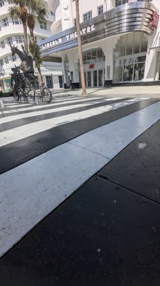
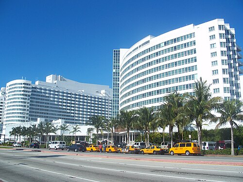
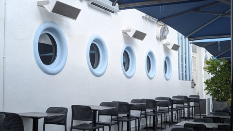

This map shows 15 of the most-searched sights in Miami Beach as photo spots, ranked by how often people search for them: Lincoln Road, Fontainebleau, Ocean Drive, Eden Roc Hotel and New World Center lead the list. Every spot has a pin on the subject and a phone icon showing where to stand, with tips for shooting it on your phone: which lens to use, how to frame it, a settings tip and the best time of day. Directions and Navigate buttons take you to the standing point on foot or by public transport. 3 spots are free to view; the full map is for members.
The 3 free photo spots
1Lincoln Road

Lincoln Road is the pedestrian shopping street of South Beach, a long, car-free mall running east to west between 16th Street and 17th Street. It was a mangrove forest until 1912, when Carl Fisher cleared a strip across the island from the ocean side to Biscayne Bay. In the 1950s the architect Morris Lapidus redesigned it in his Miami Modern ("MiMo") style, with gardens, fountains, shelters and an amphitheatre. It had its grand opening as a pedestrian mall on 28 November 1960, and it was added to the National Register of Historic Places in 2011.
For photos, the mall gives you a long straight view with cafe tables, palms, shop fronts and people strolling, so the scene has plenty of depth. Street performers and the mix of old and new buildings add variety, and the Lapidus shapes and planted areas make good foreground detail. Walk a little further to find the garden-style western block by Raymond Jungles, a good place for greenery shots. It is a busy place, so allow time to wait for a gap in the crowd, and watch your bag and phone when you stop to compose.
Where it is: Lincoln Road is in South Beach, in the southern part of Miami Beach. The mall runs between 16th Street and 17th Street, from Washington Avenue in the east to Alton Road in the west.
Shooting it on your phone
Lens: Start with the default lens (1x) for the street as you see it. Switch to the ultra-wide (0.5x) for the full width of the mall with tables and palms. Use telephoto (2x or more, depending on your phone) to pick out a performer, a shop front or a detail of the planting.
Where to stand: Stand about 210 m east of the subject, at the phone icon on the map, and face west.
Framing: Turn on the gridlines and line the street up with the centre so the shop fronts lead the eye down the mall. Keep your phone level, as tilting will bend the vertical lines of the buildings. Put some tables or planters in the foreground for depth, and wait for a gap in the crowd if you want a clear view. For a closer shot, try a side-on view of a garden or fountain area.
Settings tip: Tap on the street or a person to set focus, then slide the exposure down a touch if the sky is washing out. If a stranger is clearly the subject, try portrait mode; otherwise stay with the normal photo mode. After dark, night mode helps with the shop and restaurant lights, but hold the phone against something steady.
Best time: Early morning is the quietest time for clear views of the street. In the late afternoon and evening the mall is livelier and the lights come on, but you will be facing west, towards the low sun, so use the exposure slider.
2Fontainebleau Miami Beach

The Fontainebleau is one of Miami Beach's best-known mid-century hotels, designed by Morris Lapidus and opened in 1954. Its big curved oceanfront wing is the shape everyone remembers, and it is the reason the hotel works so well in a photo. From Collins Avenue you can line the curve up down the street, and it looks best when the building is lit at dusk or after dark. The hotel has a long film history too. It appears in the opening aerial shot after the credits of the 1964 James Bond film Goldfinger. Its architecture has also been recognised: in 2012 the American Institute of Architects' Florida Chapter ranked it first on its list of Florida's 100 places, and it joined the National Register of Historic Places in December 2008. That was the same year it reopened after a renovation of about $1 billion, which added newer towers while keeping Lapidus's original look. For a phone photo, stand on the pavement of Collins Avenue and look north, so the curved front sits to your right and leads the eye down the avenue. Keep the vertical lines straight with the gridlines. Wait for the lights to come on rather than shooting in flat daylight. An alternative is the hotel's Ocean Lawn on the oceanfront side, which gives sunrise light with the Atlantic in front, but it is hotel property.
Where it is: The Fontainebleau sits on Collins Avenue in Miami Beach, Florida, on the oceanfront side of the avenue.
Shooting it on your phone
Lens: Start with the default lens (1x) to frame the curved facade down the avenue. Try the ultra-wide (0.5x) if you want more of the street and sky, but keep the building away from the edges of the frame, where it can stretch. The telephoto (2x or more) is useful for picking out the curve of the front from further back.
Where to stand: Stand on Collins Avenue (looking north along Collins Avenue toward the curved oceanfront facade). The hotel's curved Lapidus facade framed down the avenue, most striking when the building is lit at night. The hotel's long curved oceanfront front is to the east, on your right, and should lead into the picture.
Framing: Turn on the gridlines and use the avenue's edge as a guide line, keeping the building's verticals upright. Leave some dark sky above the roofline. If you have time at the Ocean Lawn on the oceanfront side, it gives a different view of the building with the sea and sunrise in front, but it is hotel property, so check the official site before you go.
Settings tip: Use night mode once the light drops, and hold the phone steady with your elbows tucked in. Tap on the lit facade to focus, then slide the exposure down a little so the lights do not wash out. Take a few shots, as passing traffic will change each one.
Best time: Night, at blue hour, when the facade is lit and the sky still has some colour.
3Ocean Drive

Ocean Drive is a major street in South Beach, the southern part of Miami Beach. It runs north from South Pointe, just south of 1st Street, up to 15th Street, close to the Atlantic. It sits at the centre of the Miami Art Deco District, which has about 900 preserved buildings and is on the National Register of Historic Places. The street was developed in the 1920s and 1930s, and the rounded Streamline Moderne style dominates it. That is what you are photographing: rows of pastel hotel fronts, curved corners, neon signs and café terraces, all lined up along one straight street. The 1939 Colony Hotel is described as the most photographed Art Deco hotel here, and it makes an easy anchor for a picture. The Carlyle appeared in The Birdcage (1996), and the Clevelander is another popular Art Deco hotel. The street is long, so pick one stretch and keep your picture simple. A wide shot down the pavement shows the whole line of buildings, while a closer shot of a single sign, balcony or doorway shows the detail. Pavements and terraces get busy, so look for gaps between people or include them for a sense of life.
Where it is: Ocean Drive is in the South Beach district at the southern end of Miami Beach. It runs from South Pointe to 15th Street, starting about a quarter mile west of the Atlantic at its southern end, and lies just south-east of Lincoln Road.
Shooting it on your phone
Lens: Start with the default lens (1x) for most street views. Switch to ultra-wide (0.5x) when you want a whole hotel front, or when you are close to a building. Use telephoto (2x-5x, depending on your phone) to pick out a sign or rooftop detail further down the street.
Where to stand: Stand about 510 m north of the subject, at the phone icon on the map, and face south. From there the line of Art Deco buildings leads your eye down the road. Walk south for closer pictures of individual hotels.
Framing: Turn on gridlines and keep the vertical lines of the buildings straight. Place the street along a diagonal to give the picture depth. For a single hotel, stand square-on to the front and use the 1x lens. For a more relaxed street scene, include a few pedestrians or café tables for scale.
Settings tip: Tap on a pastel wall to set focus, then lower the exposure slider slightly so the colours stay rich and neon signs do not blow out. After dark, use night mode and rest your elbows against something firm to keep the shot sharp.
Best time: Early morning is usually quieter, with softer light on the facades. Around dusk and after dark the neon signs come on and the street looks quite different.
12 more spots for members
These spots are on the map as grey numbered pins. Where to stand, the phone tips, photos and directions for them come with Explorer membership.
- 4Eden Roc Miami Beach Hotel · members
- 5New World Center · members
- 6Casa Casuarina · members
- 7Joe's Stone Crab · members
- 8Delano Miami Beach Hotel · members
- 9Lummus Park · members
- 10South Pointe Park · members
- 11Bass Museum · members
- 12Española Way · members
- 13Holocaust Memorial of the Greater Miami Jewish Federation · members
- 14Wolfsonian–FIU · members
- 15Miami Beach Community Church · members
Get every spot with Explorer membership
Explorer opens every spot on every map in the library: where to stand, how to frame it on your phone and how to get there, plus the Xdatrys Maps app with maps saved on your phone for use without signal. $9.99 a month or $59.99 a year; cancel any time.
Join Explorer Compare free and Explorer
Not ready to join?
Get Pocket Lens, our free daily smartphone travel photography newsletter.
Free, and you can unsubscribe at any time. If the form does not show, sign up on our newsletter page.
Questions
What are the top photo spots in Miami Beach?
The first three on this map are Lincoln Road, Fontainebleau and Ocean Drive. They are ranked by how often people search for them. The full map has 15.
Where should I stand to photograph Lincoln Road?
Stand about 210 m east of Lincoln Road, at the phone icon on the map, and face west. Start with the default lens (1x) for the street as you see it.
When is the best time to photograph the Fontainebleau?
Night, at blue hour, when the facade is lit and the sky still has some colour.
How do I get to Ocean Drive?
No station or tram stop is listed for this spot.
Credits
Map data © OpenStreetMap contributors (ODbL); base map built with Protomaps from OpenStreetMap data. Photos from Wikimedia Commons, credited under each photo with their licence. Background reading for the free spots: Lincoln Road, Fontainebleau Miami Beach, Ocean Drive (South Beach) (Wikipedia, CC BY-SA). Access rules and opening times change: check before you go.